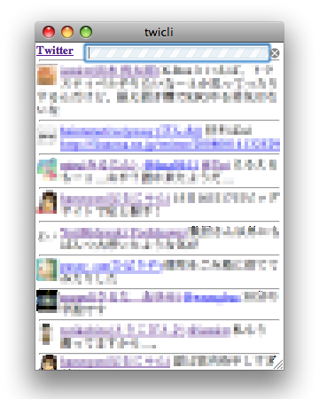

twicliとは
twicliはWebブラウザーベースの軽いTwitterクライアントです。
- Webブラウザ上で動くので、インストール不要です。
- タイムラインを随時、自動的に取得してアニメーション表示していきます。
- 専用サーバなどは介さず、クロスドメインJavaScriptで直接Twitterにアクセスします。
ネットカフェで他事しながらTwitterを眺めたいときなどに便利かも。
今のところFirefox, Safari, Operaで動いています。
iPod touch/iPhoneのMobileSafariでも動くみたいです。
(IEだと他ドメインのスクリプトに送られるCookieが何か変でNG…。)
使い方
コンパクトさ重視、というか低機能です。
- Twitterにログインしておく(「次回から入力を省略」ON推奨)
- 下記リンク(bookmarklet)をクリック、またはブックマークに登録して選択すると、別窓で起動します。
- twit一覧はホイールでスクロール(最大200件)
- twit本文をクリックすると@〜を自動入力
- アカウント名をクリックすると本家のユーザページへジャンプ
- 最上部のフィールドにテキストを入力してenterキーで発言
- 初回発言時に認証を求められた場合は、Twitterのアカウント／パスワードを入力してください。
ソース
twicli.htmlが全てです。HTML+CSS+JavaScriptで100行ちょっと。だがきちゃない。
改造などはご自由に。CodeReposにも上げておきます。